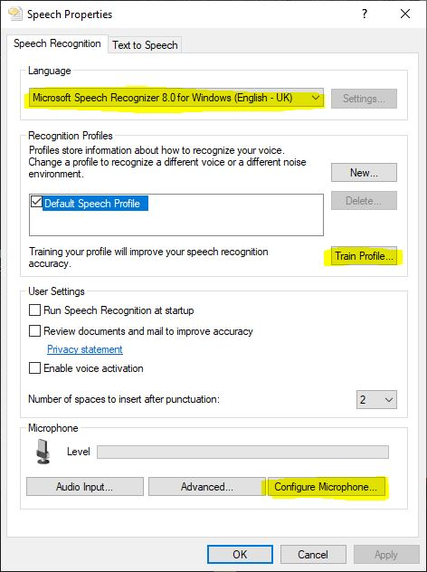

Installation
Copilot and FSLabs version compatibility
Using the keyboard and joystick binding facilities
Install Copilot using the instructions below.
If you don't want the main Copilot functionality, disable Copilot by setting enable=0 in the [General] section in options.ini
Read more here
Installing Copilot
Unzip the content of Prepar3D vx Add-ons into your Add-ons folder (eg C:\Users\Username\Documents\Prepar3D v4 Add-ons).
Run the simulator and respond to the prompt asking you to enable the addon.
After P3D has loaded into the main menu, you'll find the configuration file at Prepar3D vx Add-ons\Copilot for FSLabs\options.ini. Open it and adjust the settings.
The script will auto-run after you load a flight with FSLabs.
You can restart or stop the script from its Add-ons submenu.
If anything goes wrong during the script's operation, examine Copilot.log for errors or anything else that's unusual.
Read here if you want to extend the functionality of the script.
Setting up speech recognition
You need to have English as the Windows language in order for the speech recognition to work .
Go to Control Panel -> Speech Recognition -> Advanced speech options

Select English - UK or English - US as the language
Select Configure Microphone in the Microphone section. Warning: during this process, the recognition engine finds the optimal microphone level for its purposes. When an application such as Copilot instantiates a recognition engine, the microphone level will adjusted by the engine if it's not at that optimal setting.
Train the profile with the Train Profile wizard

If you fly online, you'll want to bind your PTT key or button to mute Copilot. There are two ways of doing it:
Copy Copilot.evt from Copilot for FSLabs\FSUIPC into your FSUIPC install folder. This will add Copilot's mute and unmute controls to FSUIPC's list of controls.
Create a separate script as described here and bind a key or button to the muteCopilot and unmuteCopilot functions, for example:

Bind { key = "A", onPress = muteCopilot, onRelease = unmuteCopilot }